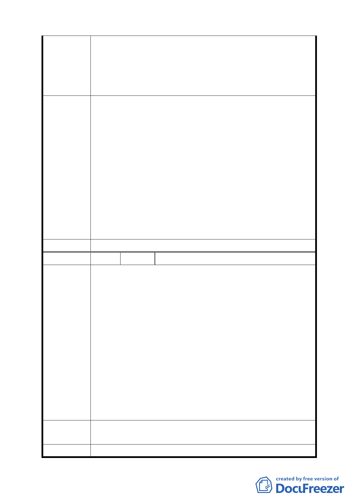

＜工程進行中降低對於環境的衝擊＞
8. 施工圍籬周邊的人行環境應給予維持，審慎留設人行道的
空間，並加以人性之考慮。
9. 基地為低窪地區，因此整地過程中需要有完善之基地排水
計畫與雨季暴雨可能造成社區淹水的監測因應計畫。
1. 新社區開闢需要提供相關回饋，以維持公共環境的品質，
彌補環境所受的影響。
2. 可否改變部分綠帶的配置，以作為新舊社區的隔離空間，
降低新社區對於舊社區的環境影響。
3. 新社區留設可供種植大樹之線性空間以維持社區空間品
建 議 辦 法 4.
質。
基地內生態現況的資料需要重新請專家調查以確認社區
所提供資料，以作為未來擬定生態監測的基礎資料。應該
落實「生態社區」的積極理念。並建立積極的生態建設模
式，基地內的石材與大樹等等資產應該在基地內使用。
5. 後續施工過程中應落實全民監工的理念與避免社區淹水
的監測因應計畫。
委員會決議 依市府公展案，照案通過。
編 號 3 陳情人 發展局函轉未具名市長信箱函
小市民為北投區奇岩社區之地主,祖先胼手胝足努力所留下
之土地，今因市府政策所需，辦理土地區段徵收，雖難免不
捨，但為地方建設自是在所不惜；94 年 7 月 28 日下午 14 時
30 分，市府地政處五科韋科長彰武先生曾於北投區奇岩活動
中心與土地所有權人辦理座談會，會中土地所有權人吳耀輝
先生已建議廢除國中用地，因近年學生人數呈遞減之故，但
陳 情 理 由 貴府卻答覆國中用地之劃設係考量鄰近石牌國中及北投國中
之學區、距離因素及空間區位，於適當之位置，依法需 2.5
公頃之面積劃設。地主們在無可奈何的情形下接受 貴府所劃
之草案，至少爾等子孫不必再長途至北投國中就學；但今 貴
府將土地區段徵收後，出爾反爾不再建國中，甚至將前已經
地主認同之草圖，在 貴府為發函各地主之情形下任意變更，
顯然有失區段徵收之原意。
建 議 辦 法 都市計畫是長長久久之大事，市府不宜於二年內任意變更計
畫，且有不尊重原地主之情事與承諾。
委員會決議 依市府公展案，照案通過。
8